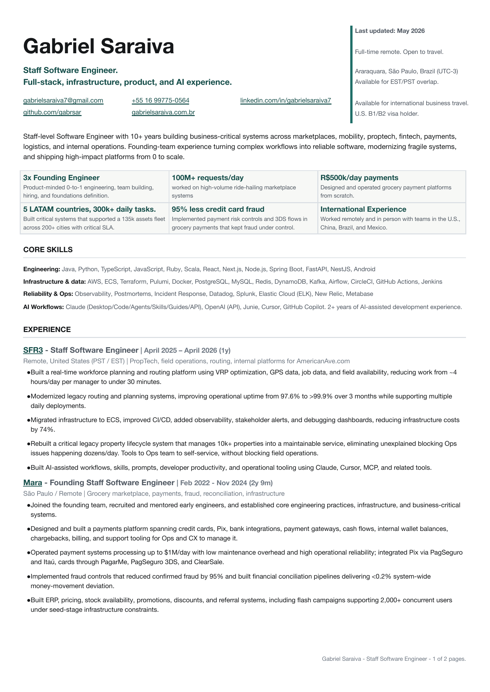
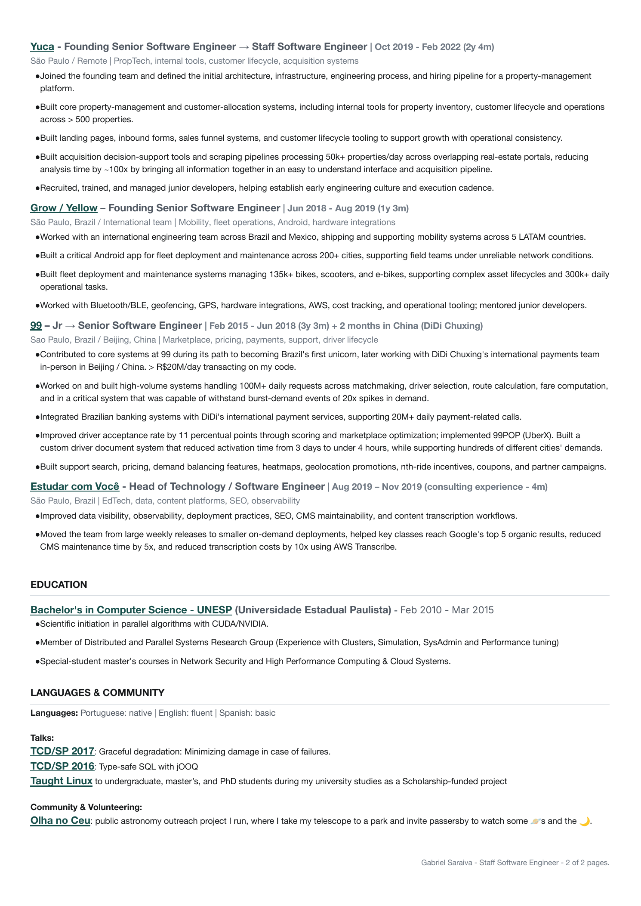

Currículo
Um pouco do que eu já fiz.
Algumas pessoas e empresas preferem uma versão em PDF do currículo, então deixei uma cópia por aqui também. O conteúdo é bem parecido com o que está no LinkedIn, só com um pouco mais de cuidado na apresentação. Para conversar ou pedir meus dados de contato, é só me chamar por lá.
